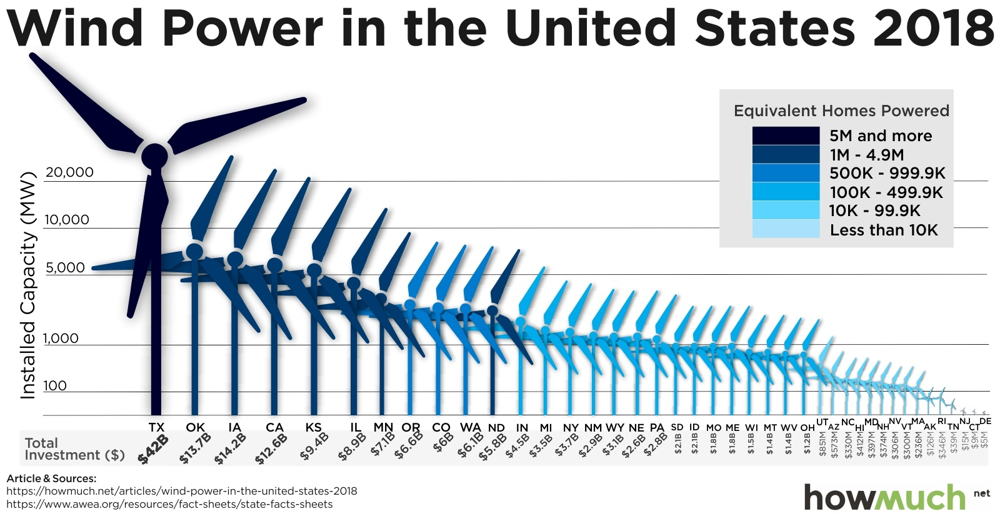

| Category | Excellent | Good | Needs work |
|---|---|---|---|
| Organization & Formatting | 5 Data placed in correct folder, read in, and variables have been renamed for ease of use in analysis. |
4 Data not placed in correct folder OR variables were not renamed. |
3 Data not placed in correct folder AND variables were not renamed, or not properly read into R. |
| Data Summary | 10 / 9 Measures of centrality and variability in appropriate variables are computed; at leaset two new useful measures are computed. |
8 / 7 / 6 Measures of centrality and variability in appropriate variables are computed; only one new useful measure computed. |
5 / 4 / 3 Measures of centrality and variability missing; failed to compute new measures. |
| Data Visualization 1 | 10 / 9 Charts expertly demonstrates best practices of visual design and highlights leadership in installed capacity. |
8 / 7 / 6 Charts generally demonstrates best practices of visual design and highlights leadership in installed capacity; some elements might be confusing. |
5 / 4 / 3 Chart generally lacks best practices of visual design; elements are confusing, does not highlight leadership in capacity. |
| Data Visualization 2 | 10 / 9 Charts expertly demonstrates best practices of visual design and conveys a clear message. |
8 / 7 / 6 Charts generally demonstrates best practices of visual design and conveys a reasonably clear message; some elements might be confusing. |
5 / 4 / 3 Chart generally lacks best practices of visual design; elements are confusing, does not highlight a clear message. |
| Analysis Description | 5 Informative description of flaws in the original chart & their improvements; clear description of revised chart key message. |
4 Description of one or two of design flaws in original chart & improvements made; accurate but incomplete description of key message in revised charts. |
3 Poor description of design flaws in the original chart & improvements made; poor or missing description of key message of revised charts |
| Technical things | 5 All code runs without errors; all files included in the submitted .zip file. |
4 Code has only one or two error, otherwise runs; all files included in the submitted .zip file. |
3 Code has multiple errors; submitted .zip file is missing components necessary to reproduce analysis. |
Mini Project 3: Data Viz Re-Design
Due: Nov 10 by 11:59pm
Weight: This assignment is worth 10% of your final grade.
Purpose: At some point in your career, you will likely be involved in creating or revising a summary chart of some data. When that happens, you will also likely be the most knowledge person in the room about what to do to design the chart(s) to effectively communicate the information in the data. This assignment is a practice run for that day.
Assessment: Your submission will be assessed using the rubric at the bottom of this page.
Background
The American Wind Energy Association (AWEA) is a national trade association that advocates for the wind power industry. They also publish data on wind power statistics in the U.S. The authors of this article at howmuch.net got a hold of some of this data and published this unfortunate chart:

For this assignment, you will use the ggplot2 library in R to redesign the above chart. In this redesign, we are interested in exploring this question:
Which states are leaders in wind energy?
The answer depends on what you consider a “leader” to be. For example, the authors of the above chart clearly viewed the installed capacity as the most important metric to highlight. But this chart also contains lots of other data, such as the amount of money each state invested and the number of homes powered by wind in each state. Some states may be leading in other ways, such as the capacity built per dollar of investment.
With that in mind, here’s what you need to do for this analysis:
1. Get organized
- Download and unzip this template for your project, then open the
report.Rprojfile. - Once RStudio opens, click on the
report.qmdfile. That is the primary file you will edit to conduct your analysis. - Update the YAML with your name, a title, the date, etc.
- Delete any of the existing text / code in the template before submitting - the template text is just there as a helpful guide.
Points will be taken off for failing to follow these basic organizing steps.
2. Load the data
Use this link to download the US_State_Wind_Energy_Facts_2018.xlsx file and put it in your data_raw folder. Here is some information on the data:
Description: Data on which US states produce the most wind energy.
Source of downloaded file: The formatted Excel spreadsheet was downloaded from data.world: https://data.world/makeovermonday/2019w8
Original source: The primary source is the American Wind Energy Association (https://www.awea.org/), but the source for this particular data was found on this article, which cites the AWEA.
Data dictionary:
| Variable | Description |
|---|---|
Ranking |
Rank order of state by installed capacity |
State |
U.S. state |
Installed Capacity (MW) |
Installed capacity in MW |
Equivalent Homes Powered |
Number of homes powered by wind power |
Total Investment ($ Millions) |
Total Investment in $ millions |
Wind Projects Online |
Number of projects currently online |
# of Wind Turbines |
Number of wind turbines in state |
3. Preview the data
In the setup chunk in your report.qmd file, write code to read in the excel sheet, then write code to preview the data, e.g. using head(), glimpse(), View(), and / or make some quick plots (Hint: look at the top and bottom!). Take note of what variables are available, their types, what they measure, and if there are any missing values. (Hint: Read the data dictionary!) Are all the variables encoded the way you would expect (e.g. are numbers encoded as numbers?)
4. Clean the data
- Write code to modify variable types and names to get your data frame cleaned up for analysis. As you do so, I recommend that you modify some of the column names (especially those with spaces in them) to make your analysis easier. (Hint: The
clean_names()function from thejanitorpackage is a life saver!) - Write a few sentences describing any modifications you made to the original data and why you did it.
5. Summarize the data
- Examine measures of centrality and variability in the important variables relevant to our research question. Remember that we’re interested in the states that are “leaders” in wind energy. While installed capacity is an obvious choice to look at, you should also look at summaries of other values, such as the amount of money invested, and at least two other computed measures, such as the capacity per dollar invested (Note: you’ll need to create new variables to do this!).
- Write a few sentences explaining your summary measures and what you learned from them.
6. Visualize the data
- Create an appropriate visualization that highlights leadership in installed capacity. This chart should be a substantial improvement over the original visualization, and it should follow the design principles we have covered in class.
- Create a second visualization that highlights “leadership” in another metric of your choice. This could be one of the existing variables or a variable you computed. Your chart and design choices should highlight the metric you chose and should have a clear message to convey. Again, this chart should follow the design principles we have covered in class. This chart should be a different style from your first chart, so don’t just copy-paste over the same thing and apply it to a new metric. Be creative and try something different for your second chart!
Your charts should be polished. Points will be taken off for poor design principles, illegibility, etc.
7. Summarize your analysis
Write a summary of your analysis process. I’m specifically looking for a discussion of the following:
- What was wrong with the original chart? Discuss specific design principles we have covered in class.
- Discuss the improvements your first revised chart makes compared to the original chart.
- Discuss what message your second chart conveys and what design choices you made to highlight that message.
8. Render and submit
Click the “Render” button to compile your .qmd file into a html web page. Then open the report.html file in a web browser and proofread your report.
Does all of the formatting look correct? Make sure there are no errors in the rendered file before submitting it.
Once you’ve proofread your report, create a zip file of all the files in your R project folder for this assignment and submit it on the corresponding assignment submission on Blackboard.